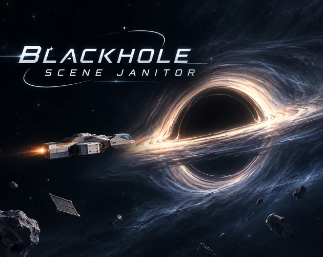

Space Salvage Sim
Blackhole Scene Janitor
You are a salvage pilot paying off a huge debt. Gather space junk, tow it to the black hole and let it fall in. Every load pays credits and feeds the black hole, which grows through five stages. The run ends when the black hole matures.
- Role
- UI Designer
- Team Size
- 8
- Dev Time
- 4 days
- Role
- Made for the Epic AI MegaJam 2026, where AI tools were part of the brief. UI designer, directing AI-driven UI design: set the UI style and the rules the AI worked within, selected each screen’s direction from AI-generated options, and gave the revision notes behind each change. Also laid out the 63-node upgrade tree and gathered requirements from the lead and casino programmers. AI built the mockups and the first in-engine HUD and wrote the handoff documents; the lead programmer finished the implementation.
- The direction
- An original holographic interface, projected into space rather than mounted in a cockpit, since the camera is third person. Thin condensed type, hairlines instead of boxes, one hexagon icon shape (outline for off, solid for on), and strict colour roles: off-white for text, gold only for credits, orange for alerts and red for danger.
- The rules
- No heavy frames or boxes, following the art director’s preference from working on and playing sci-fi games. A dark glass backing only where the background is busy, such as over the bright black hole disk. Mouse-driven menus with no keyboard hints, because the keybinds changed almost daily. Every screen shows only data the game actually exposes.

Process
Rules for the AI came before any design work. It could only touch the UI folder, two UI code files and the docs on a separate branch, and it changed nothing without approval. Those limits made it safe to move fast in a shared repo while programmers were changing the game underneath.
Every screen went through the same loop. The AI read the game code to find what the screen had to show and generated several directions at once. One was selected, then revised through comments on the exact element, such as “move combo information to centre under combo circle.” Short, specific comments produced accurate revisions in one pass, so comments were written like redlines. Before sign-off, each screen was checked against the worst values the game could produce.
On the last day, engine work stopped and the output switched to handoff specs: one document per area, with exact positions, colours, font sizes and data fields, written so the lead’s AI agents could build each screen without seeing the boards. Claude and Codex ran side by side under a simple protocol: separate notes files, claiming files before editing, and one agent committing at a time.
HUD
The first full HUD, J3b, ran a thin strip across the top with skewed side wings to fake a perspective tilt, since Unreal’s UI has no perspective. Boost and the trash hold sat bottom centre, where the player’s eyes already are while flying, and the weapon went in the bottom-left corner.
Tested with real late-game numbers, it broke: the mass text ran into the combo ring and the status list grew to seven long lines. The fix, A2, followed one rule: very specific fixes, not a redesign. Everything the player owns moved into one group at the top left. Chain and best chain became numbers with link and crown icons, centred under the combo ring. The magnet became a meter beside the tractor controls, and the object HP readout was sized for the longest debris name in the game.
Menus & Settings
Fonts were split by job: Saira Condensed for the title, Barlow Light for menus and Roboto for the HUD, for legibility at small sizes. Settings has four tabs, and the team built it from this design during the jam.
Upgrades
The final 63-node upgrade tree was laid out by hand. The AI drew a 17-icon hexagon set in the style system and flagged that the game still used older 40-node data.
Casino
Out of nine casino directions, “Pure type” was chosen for the menu and the Appraiser’s Wheel, and “One big number” for the Lucky Machine. The wheel screen leaves a frame for the real 3D wheel model. The Lucky Machine keeps every part and number of the existing feature, because the programmer confirmed it wouldn’t change; after review, all its text was enlarged by about 20%.
End Screen
The ending uses the “Held last frame” direction. Instead of fading fully to black after the maturity cutscene, the fade stops at about 80%, so the matured black hole stays visible behind the stats and the result screen shows what the player made.
Takeaways
Directing AI made iteration much faster. A change could be described and seen almost immediately, instead of spent on tedious work like resizing.
The most frequent correction was visual feel. Layouts were often balanced mathematically but didn’t feel balanced, and that judgement couldn’t be handed off.
Writing each screen down well enough for another AI to build it sharpened the decisions: every choice needed a number and a reason, because “it looks right on the board” isn’t something an agent can implement.
Next time, the first step would be comparing different models to find the best one for the job, instead of forcing one to work.